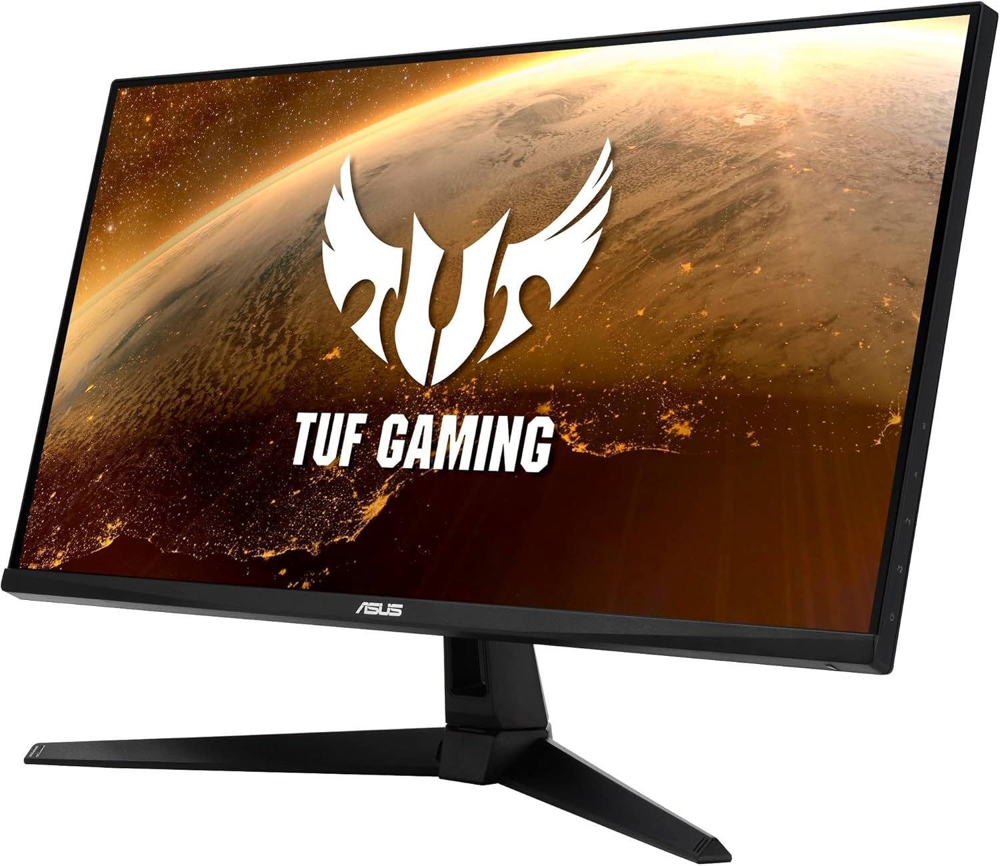

ASUS TUF Gaming VG24VQ1B 23.8" LED FullHD 165Hz FreeSync Premium Curva

Especificaciones
Frecuencia de actualización de 165 Hz: La frecuencia de actualización de 165 Hz del TUF Gaming VG24VQ1B reduce el lag y el desenfoque por movimiento para darte ventaja en los juegos de shooter en primera persona, carreras, estrategia en tiempo real y deportes.
Pantalla: El panel Full HD (1920 × 1080) de 23,8 pulgadas del TUF Gaming VG24VQ1B ofrece unas imágenes impresionantes desde todos los ángulos con una curvatura de 1500R que asegura que cada punto sea equidistante de tus ojos.
Extreme Low Motion Blur: El VG24VQ1B incorpora la última tecnología Extreme Low Motion Blur exclusiva de ASUS, que alcanza 1 ms de MPRT para eliminar las manchas y el desenfoque de movimiento.
Conectividad completa: El VG24VQ1B dispone de amplias opciones de conectividad, como HDMI (v1.4), DisplayPort1.2 y conector para auriculares, compatibles con una gran variedad de dispositivos multimedia.
Diseño ergonómico: El soporte ergonómico de este monitor permite regular la inclinación, para que disfrutes de un ángulo de visión perfecto en cualquier situación. También es compatible con accesorios de montaje VESA.